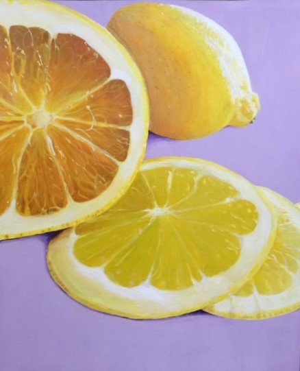
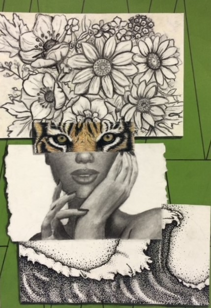

"Bittersweet" - realistic still life painting done with acrylic on posterboard

"Mother Nature" - abstract mixed media portrait

"Desert Dawn" - pointilistic landscape done with oil pastel on paper

"Stone-faced" - a chiaroscuro style drawing done in colored pencil on paper